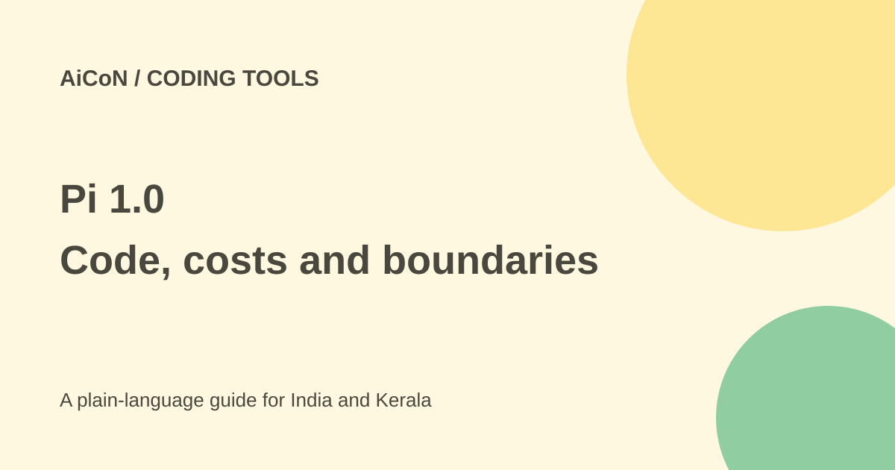

Pi 1.0: terminal coding, costs and safety
Pi is a small, customisable coding tool that runs in a terminal. Earendil announced version 1.0 on 1 October 2026. The software is MIT licensed, but your chosen AI model and computer resources can cost money.

What does Pi do?
Pi can read and change files and run commands while working on a coding task. You can extend it with packages, themes and other add-ons. Its four modes include an interactive terminal, print/JSON output, RPC and an SDK for building your own application.
The 1.0 announcement adds Codemode with native MCP support and new model types. MCP is a way for an AI tool to connect to other tools and data. The current site lists many model providers, including local models through Ollama. Provider support does not mean every model is equally good at a task.
The safety detail to read first
The official repository says Pi has no built-in permission system that restricts files, processes, network or credentials. By default it runs with the permissions of the user and process that started it. Do not assume it will ask before every destructive command.
The repository describes container and sandbox options for stronger boundaries. These need proper setup. Simply opening a test folder is not a security boundary against access elsewhere on your computer.
How to try it on a spare project
- Read the official installation instructions and permissions section.
- Use a backed-up sample project without client data or production secrets.
- Choose and configure a real sandbox or isolated machine before permitting broad commands.
- Review the installation method. The site offers npm with ignore-scripts as well as shell installers; do not pipe an unread remote script into a shell.
- Connect the intended model account and set a spending limit where the provider supports one.
- Ask for a small change, such as explaining and testing one sample function.
- Inspect the diff and run tests yourself. Keep changes on a separate branch and never expose a production key for a tutorial.
Free or paid in India?
Installing the MIT software does not require buying a Pi licence. Hosted model usage is billed by the selected provider or follows that provider's subscription terms. A local model needs suitable hardware and electricity. No single monthly rupee price applies to every Pi setup.
For a Kerala student, a small spare repository is a better first test than a college project containing classmates' personal information. For a business, check the chosen model's data terms before sending proprietary code.
What changed since the original post?
We checked the official 1.0 announcement and the current repository. The most important added detail is the lack of a built-in permission system. Launch claims about user numbers are not an independent quality test. No code was installed or project modified for this guide.
Frequently asked questions
Is Pi a free AI model?
No. It is a coding tool that connects to models you choose.
Will it always ask before a command?
Do not assume that. The official permissions section says there is no built-in restriction system.
Can I extend it?
Yes. Inspect an add-on's source and permissions before installing it.
Sources: Official Pi site · Pi 1.0 announcement · Repository and permissions · Actual MIT licence. Checked 7 October 2026.